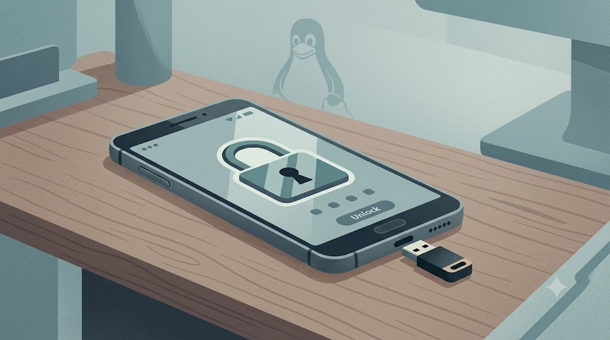

픽셀 모뎀 제로클릭 취약점 소식을 보고 나서(픽셀 털림) 궁금해졌다. 리눅스가 깔린 스마트폰도 리눅스 컴퓨터처럼 디스크를 유비키로 잠가서, 열 때마다 유비키가 필요하게 만들 수 있을까?
결론부터 말하면 가능은 하다. 다만 PC처럼 설정 몇 줄로 끝나진 않고, 꽤 손을 봐야 한다.
전제 조건
- 대표적인 리눅스폰인 PinePhone / PinePhone Pro(postmarketOS, Mobian), Librem 5(PureOS)는 설치할 때 LUKS 전체 디스크 암호화를 켤 수 있다. 부팅하면 화면 키보드로 암호를 입력하는 방식.
- 이 폰들은 NFC가 없어서 유비키는 USB-C로 꽂아야 한다. 두 기기 모두 USB-C 호스트(OTG)를 지원하니 유비키 5C 같은 걸 바로 꽂으면 된다.
부팅할 때 유비키로 디스크 열기
원리는 PC와 같은데, 폰은 부팅 초기 단계(initramfs)가 PC와 달라서 거기서 막히기 쉽다.
- FIDO2 방식(
systemd-cryptenroll --fido2-device) — PC에서 흔히 쓰는 방법. postmarketOS는 부팅 초기 단계가 자체 방식이라 기본으로는 안 된다. Mobian이나 PureOS에서 부팅 초기 단계를 dracut 같은 systemd 방식으로 바꾸면 이론상 가능하지만, 잘못하면 부팅이 안 될 수 있다. - 챌린지-응답 방식(
yubikey-luks, HMAC-SHA1) — 데비안 계열(Mobian, PureOS)에서 가장 현실적이다. 데비안 패키지가 있어서, 부팅 때 유비키를 꽂고 암호를 입력하면 디스크가 열린다.
화면 잠금 풀 때마다 유비키?
부팅 때 디스크를 여는 것과 평소 화면 잠금을 푸는 건 별개다.
리눅스폰의 화면 잠금(Phosh)은 PAM을 쓰기 때문에 pam_u2f를 붙이면 이론상 가능하다. 다만 잠금 화면에서 "유비키 터치" 안내가 제대로 뜨는지는 기기와 버전마다 달라서 직접 해봐야 안다.
그리고 폰은 하루에도 수십 번 잠금을 푼다. 매번 USB-C로 유비키를 꽂는 건… 현실적으로 꽤 번거롭다.
현실적인 구성
- 부팅: 유비키 + 암호로 디스크를 연다. 폰을 뺏겨서 전원이 꺼지면 데이터는 못 연다.
- 평소 잠금: 긴 PIN이나 암호.
이렇게 나누는 게 보안과 편의 사이 균형이 제일 좋아 보인다.
모뎀 이야기
픽셀 건과 이어지는 부분도 있다. Librem 5와 PinePhone은 모뎀이 본체와 분리된 구조고, Librem 5는 아예 물리 스위치로 모뎀을 끌 수 있다. 모뎀 취약점이 무서운 입장에서는 이게 오히려 더 큰 장점일지도.
다음 폰은 리눅스 폰으로 갈지도 모르겠다.